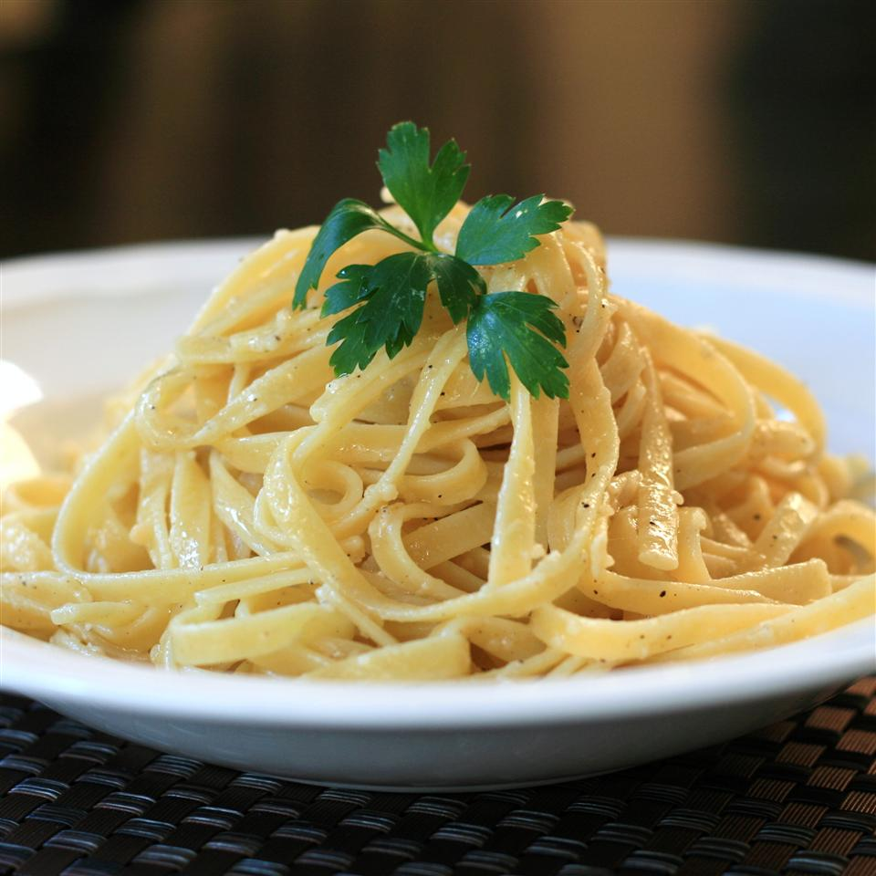

Buttered Noodles

Description
A simple recipe with a self explanatory flavor.
Ingredients
- 1 (16 ounce) package fettuccine noodles
- 6 tablespoons butter
- 1/3 cup grated Parmesan cheese
- salt and ground black pepper to taste
Steps
- Fill a large pot with lightly salted water and bring to a rolling boil.
- Stir in fettuccine, bring back to a boil, and cook pasta over medium heat until tender yet firm to the bite, or for 8 to 10 minutes.
- Drain and return pasta to pot.
- Mix butter, Parmesan cheese, salt, and pepper into pasta until evenly combined.